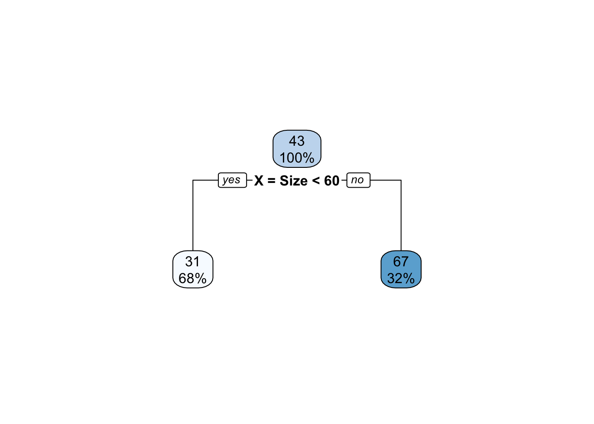
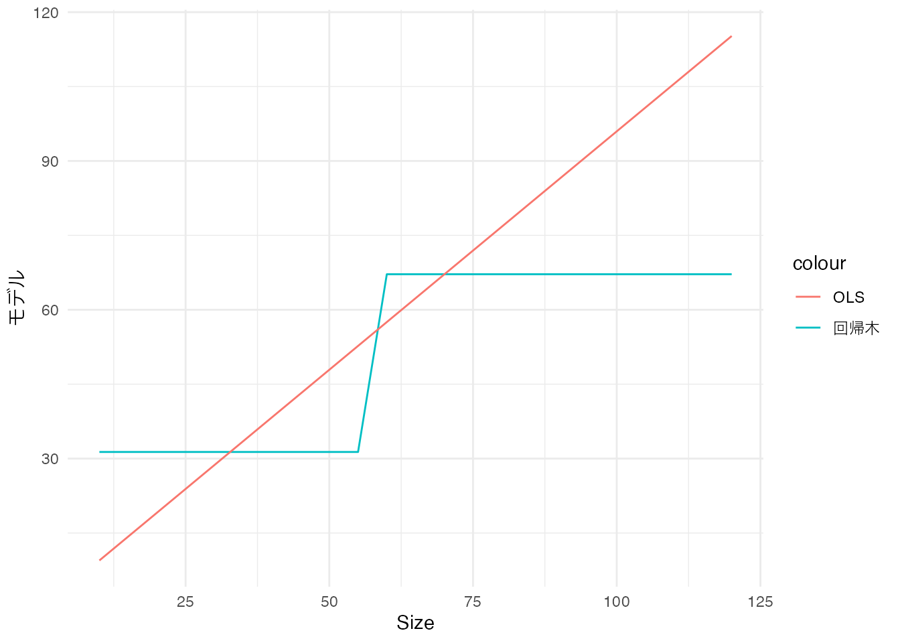
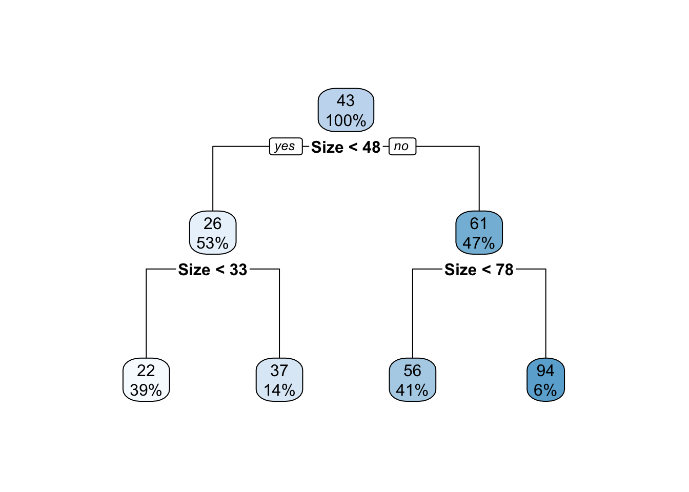
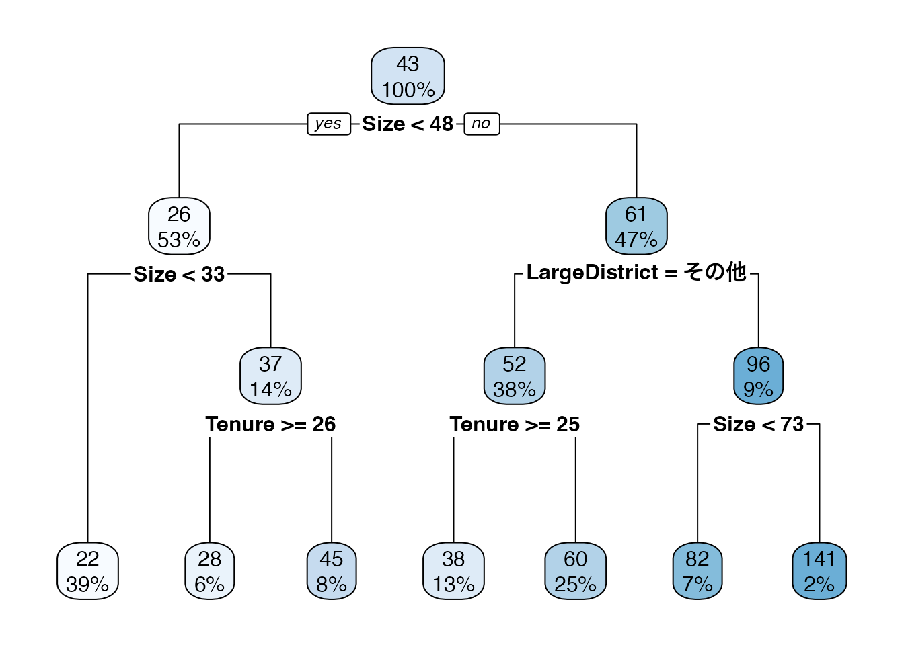

7 回帰木モデル
本章では線型モデルの有力な代替案である、回帰木モデルを紹介します。 標準的な回帰木は、”サブグループ平均値”を母平均の推定値とします。
回帰木モデルにおける最大の論点は、サブグループをどのように定義するのか、にあります。 伝統的には、研究者が背景知識などを用いて定式化してきました。 近年では、サブグループの定義もデータ主導で行う方法が注目されています。 特にモデル集計と呼ばれる手法も用いることで、母平均の近似精度を大きく改善することが期待されます。
7.1 伝統的な方法
例えば、\(X=\) [部屋の広さ]、 \(Y=\) 取引価格、について、母平均 \(E[Y\mid X]\) を推定する際に、サブグループ \(\{\) 部屋の広さが60以上, 部屋の広さが60以下 \(\}\) に分け、各サブグループごとに平均取引価格を計算し推定とすることができます。
このようなモデルは、以下のように樹形図として表現できます。
一番上のボックスには、データ全体の平均取引価格 (43) とデータ全体に占める事例数の割合 (100 \(\%\))を示しています。 下のボックスは、各サブグループの平均取引価格と事例数の割合を示しています。 部屋の広さが60以下であれば”yes”、以上であれば”no”です。 例えば、60以下のサブグループにおけう平均取引価格は31、事例数の割合は68 \(\%\) となります。
また散布図に示すと以下のように、“階段状”のモデルとなります。 赤線が回帰モデル、青線は比較対象としてOLS (\(Price\sim\beta_0 + \beta_1\times Size\)) を示しています。

7.2 データ主導の方法
伝統的な方法の応用上の問題は、サブグループの定義を研究者が行う必要があることです。 研究課題によっては、このような研究者主導のサブグループ分けは困難です。
この問題について、データ主導のサブグループ分けが提案されています。 最も代表的な方法は、データへの当てはまりの良さ を最大にするようにサブグループを定義する方法です。 この場合は、最大分割回数や各サブグループの事例数の下限値を設定した後、二乗誤差の平均値を最小化するようにサブグループを定義する方法が一般的です。
以下ではrpart関数を用いて、最大２分割、最小事例数を50として、回帰木を推定しました。 \(Y\) は取引価格、 \(X=[Size]\) です。
Model = rpart::rpart(
Price ~ Size,
data = Data,
control = rpart::rpart.control(
maxdepth = 2,
minbucket = 50,
minsplit = 1
)
) # 回帰木の推定
rpart.plot::rpart.plot(Model) # 可視化
rpart関数は、「貪欲なアルゴリズム」を用いて、2グループへの分割を繰り返します。 一番最初の分割では、Sizeが48以上か否かでサブグループが定義されました。 これは48以上か否かで分割しサブグループ平均を計算するモデルが、最もデータへの当てはまりが良いためです。
48以下の物件については、33以上か否かで2回目の分割が行われました。 この理由は、1回目の分割と同様に、33以上か否かで分割したモデルのデータへの当てはまりが良いためです。 同様に48以上については、78以上か否かで分割されます。
回帰木は、複数の\(X\)を用いたモデルも生成できます。 以下では、Sizeに加え、築年数 (Tenure) および物件の立地 (LargeDistrict = [中心6区、その他]) も加えたモデルを推定しています。 すなわち \(X=[Size,Tenure,LargeDistrict]\) となります。
Model = rpart::rpart(
Price ~ Size + Tenure + LargeDistrict,
data = Data,
control = rpart::rpart.control(
maxdepth = 2,
minbucket = 50,
minsplit = 1
)
) # 回帰木の推定
rpart.plot::rpart.plot(Model) # 可視化
結果、Sizeが48以上の物件については、立地が中心6区か否かで２回目の分割が行われました。
7.3 過剰適合への対処
回帰木における複雑性は、最大分割回数や各サブグループの事例数の下限値などに操作できます。 最大分割回数を増やし、事例数の下限を減らせば、モデルはより複雑化します。 複雑なモデルは、事例数が十分にあれば、母平均の特徴をよりよく捉えることができます。 一方でOLSと同様に、複雑な回帰木モデルを推定すると、データへの適合度は高まる一方で、母平均からは乖離する傾向が生じます。
このような問題に対しては、LASSO同様に、モデルを適切に単純化する方法が考えられます。 代表的な方法としては、「剪定 (Pruning)」などが挙げられます。 詳細は、James et al. (2021) などを参照ください。
次節では、母平均の近似を目指す場合により有力な方法である、モデル集計を紹介します。
7.4 Rによる実践例
以下のパッケージを使用
readr (tidyverseに同梱): データの読み込み
rpart (Rに同梱): 回帰木の推定
rpart.plot : 回帰木の可視化
データを取得します。
Data = readr::read_csv("Public.csv") # データ読み込みrpart関数を用いてOLSを推定します。
Tree = rpart::rpart(
Price ~ Size + Tenure + StationDistance + LargeDistrict, # Y ~ X
Data, # 使用するデータの指定
control = rpart::rpart.control(
maxdepth = 3, # 最大分割回数 = 2
minsplit = 50, # 50以下になったら分割を停止
minbucket = 50 # 50以下のサブグループを作らない
)
)
Treen= 6378
node), split, n, deviance, yval
* denotes terminal node
1) root 6378 5935190.00 42.70522
2) Size< 47.5 3359 503187.50 26.41390
4) Size< 32.5 2458 147489.90 22.38031 *
5) Size>=32.5 901 206606.60 37.41787
10) Tenure>=25.5 386 43399.57 27.53238 *
11) Tenure< 25.5 515 97213.62 44.82718 *
3) Size>=47.5 3019 3548597.00 60.83127
6) LargeDistrict=その他 2430 1257966.00 52.28255
12) Tenure>=24.5 837 218600.20 38.45950 *
13) Tenure< 24.5 1593 795403.00 59.54551 *
7) LargeDistrict=中心6区 589 1380391.00 96.10017
14) Size< 72.5 446 412038.60 81.80269 *
15) Size>=72.5 143 592832.50 140.69230 *rpart.plot関数を用いて可視化します。
rpart.plot::rpart.plot(Tree)